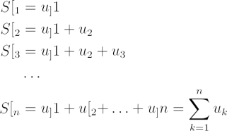
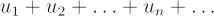
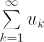
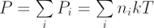

The addition of a sequence of numbers can be represented with the summation symbol (Σ).
Consider an addition sequence, Sn. Suppose the numbers to be added are u1, u2, u3, …, un. We let
 S1 &= u1\\S2 &= u1 + u_2\\ S3 &= u1 + u_2 + u_3\\ &\ldots\\ Sn &= u1 + u2 + \ldots + un = \sum\limits_{k=1}^n u_k \end{align*}"width="321" height="186" /> |
The sigma (Σ) symbol represents a summation of n components. As n increases without bound…

…we are led to consider a summation over infinite components, which is denoted by

Such an expression is called an infinite series. As an example, we can write the equation of state for a mixture of gases:
 |
where P = total pressure |
| Pi = partial pressures of all i gas species | |
| ni = particle number per unit volume | |
| k = Boltzmann’s constant, and | |
| T = temperature |
This equation describes the total pressure P, as the summation of partial pressures Pi.